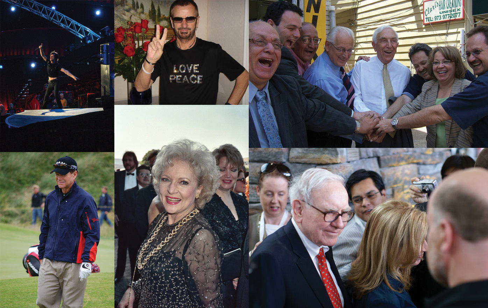
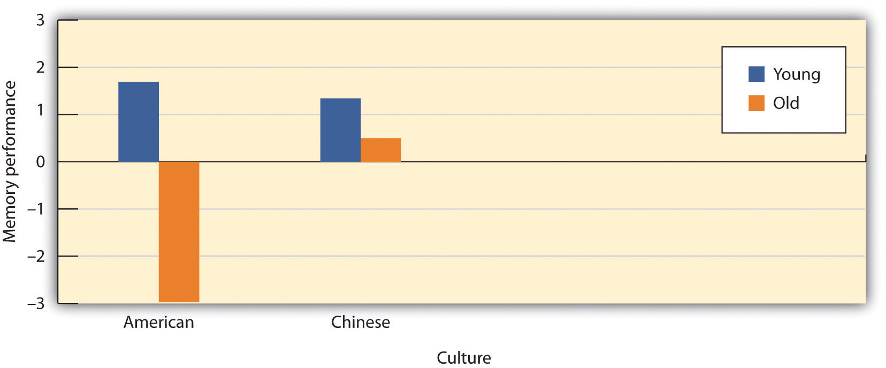
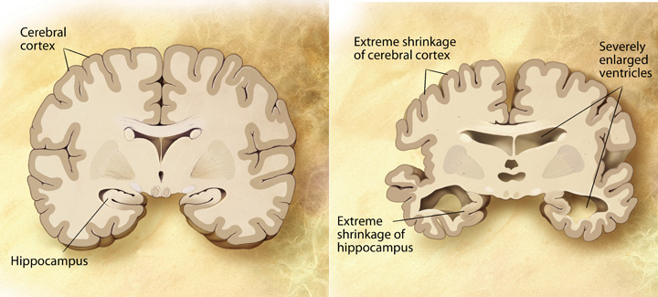

We have seen that, over the course of their lives, most individuals are able to develop secure attachments; reason cognitively, socially and morally; and create families and find appropriate careers. Eventually, however, as people enter into their 60s and beyond, the aging process leads to faster changes in our physical, cognitive, and social capabilities and needs, and life begins to come to its natural conclusion, resulting in the final life stage, beginning in the 60s, known as late adulthoodThe final stage of life, beginning at about age 65..
Despite the fact that the body and mind are slowing, most older adults nevertheless maintain an active lifestyle, remain as happy or are happier than when they were younger, and increasingly value their social connections with family and friends (Angner, Ray, Saag, & Allison, 2009).Angner, E., Ray, M. N., Saag, K. G., & Allison, J. J. (2009). Health and happiness among older adults: A community-based study. Journal of Health Psychology, 14, 503–512. Kennedy, Mather, and Carstensen (2004)Kennedy, Q., Mather, M., & Carstensen, L. L. (2004). The role of motivation in the age-related positivity effect in autobiographical memory. Psychological Science, 15, 208–214. found that people’s memories of their lives became more positive with age, and Myers and Diener (1996)Myers, D. G., & Diener, E. (1996). The pursuit of happiness. Scientific American, 274(5), 70–72. found that older adults tended to speak more positively about events in their lives, particularly their relationships with friends and family, than did younger adults.
The changes associated with aging do not affect everyone in the same way, and they do not necessarily interfere with a healthy life. Former Beatles drummer Ringo Starr celebrated his 70th birthday in 2010 by playing at Radio City Music Hall, and Rolling Stones singer Mick Jagger (who once supposedly said, “I’d rather be dead than singing ‘Satisfaction’ at 45”) continues to perform as he pushes 70. The golfer Tom Watson almost won the 2010 British Open golf tournament at the age of 59, playing against competitors in their 20s and 30s. And people such as the financier Warren Buffet, U.S. Senator Frank Lautenberg, and actress Betty White, each in their 80s, all enjoy highly productive and energetic lives.
Figure 6.12
Aging does not affect everyone equally. All of these people—in their 60s, 70s, or 80s—still maintain active and productive lives.
Sources: Jagger photo courtesy of Gonzalo Andrés, http://commons.wikimedia.org/wiki/File:Mick_Jagger.jpg. Starr photo courtesy of Tina 63, http://commons.wikimedia.org/wiki/File:Ringo.jpg. Lautenberg-Pascrell photo courtesy of Tony, http://www.flickr.com/photos/tonythemisfit/2551278536. Buffet photo courtesy of Mohammad Bahareth, http://www.flickr.com/photos/mbahareth/3771184817. Watson photo courtesy of Ian Tilbrook, http://commons.wikimedia.org/wiki/File:2008_Open_Championship_-_Tom_Watson.jpg. White photo courtesy of Alan Light, http://www.flickr.com/photos/alan-light/211186811.
Researchers are beginning to better understand the factors that allow some people to age better than others. For one, research has found that the people who are best able to adjust well to changing situations early in life are also able to better adjust later in life (Rubin, 2007; Sroufe, Collins, Egeland, & Carlson, 2009).Rubin, L. (2007). 60 on up: The truth about aging in America. Boston, MA: Beacon Press; Sroufe, L. A., Collins, W. A., Egeland, B., & Carlson, E. A. (2009). The development of the person: The Minnesota study of risk and adaptation from birth to adulthood. New York, NY: Guilford Press. Perceptions also matter. People who believe that the elderly are sick, vulnerable, and grumpy often act according to such beliefs (Nemmers, 2005),Nemmers, T. M. (2005). The influence of ageism and ageist stereotypes on the elderly. Physical & Occupational Therapy in Geriatrics, 22(4), 11–20. and Levy, Slade, Kunkel, and Kasl (2002)Levy, B. R., Slade, M. D., Kunkel, S. R., & Kasl, S. V. (2002). Longevity increased by positive self-perceptions of aging. Journal of Personality and Social Psychology, 83, 261–270. found that the elderly who had more positive perceptions about aging also lived longer.
In one important study concerning the role of expectations on memory, Becca Levy and Ellen Langer (1994)Levy, B., & Langer, E. (1994). Aging free from negative stereotypes: Successful memory in China among the American deaf. Journal of Personality and Social Psychology, 66(6), 989–997. found that, although young American and Chinese students performed equally well on cognitive tasks, older Americans performed significantly more poorly on those tasks than did their Chinese counterparts. Furthermore, this difference was explained by beliefs about aging—in both cultures, the older adults who believed that memory declined with age also showed more actual memory declines than did the older adults who believed that memory did not decline with age. In addition, more older Americans than older Chinese believed that memory declined with age, and as you can see in Figure 6.13, older Americans performed more poorly on the memory tasks.
Figure 6.13
Is Memory Influenced by Cultural Stereotypes? Levy and Langer (1994) found that although younger samples did not differ, older Americans performed significantly more poorly on memory tasks than did older Chinese, and that these differences were due to different expectations about memory in the two cultures.
Source: Adapted from Levy, B., & Langer, E. (1994). Aging free from negative stereotypes: Successful memory in China among the American deaf. Journal of Personality and Social Psychology, 66(6), 989–997.
Whereas it was once believed that almost all older adults suffered from a generalized memory loss, research now indicates that healthy older adults actually experience only some particular types of memory deficits, while other types of memory remain relatively intact or may even improve with age. Older adults do seem to process information more slowly—it may take them longer to evaluate information and to understand language, and it takes them longer, on average, than it does younger people, to recall a word that they know, even though they are perfectly able to recognize the word once they see it (Burke, Shafto, Craik, & Salthouse, 2008).Burke, D. M., Shafto, M. A., Craik, F. I. M., & Salthouse, T. A. (2008). Language and aging. In The handbook of aging and cognition (3rd ed., pp. 373–443). New York, NY: Psychology Press. Older adults also have more difficulty inhibiting and controlling their attention (Persad, Abeles, Zacks, & Denburg, 2002),Persad, C. C., Abeles, N., Zacks, R. T., & Denburg, N. L. (2002). Inhibitory changes after age 60 and the relationship to measures of attention and memory. The Journals of Gerontology: Series B: Psychological Sciences and Social Sciences, 57B(3), P223–P232. making them, for example, more likely to talk about topics that are not relevant to the topic at hand when conversing (Pushkar et al., 2000).Pushkar, D., Basevitz, P., Arbuckle, T., Nohara-LeClair, M., Lapidus, S., & Peled, M. (2000). Social behavior and off-target verbosity in elderly people. Psychology and Aging, 15(2), 361–374.
But slower processing and less accurate executive control does not always mean worse memory, or even worse intelligence. Perhaps the elderly are slower in part because they simply have more knowledge. Indeed, older adults have more crystallized intelligenceA person’s accumulated general knowledge about the world, including semantic knowledge, vocabulary, and language.—that is, general knowledge about the world, as reflected in semantic knowledge, vocabulary, and language. As a result, adults generally outperform younger people on measures of history, geography, and even on crossword puzzles, where this information is useful (Salthouse, 2004).Salthouse, T. A. (2004). What and when of cognitive aging. Current Directions in Psychological Science, 13(4), 140–144. It is this superior knowledge combined with a slower and more complete processing style, along with a more sophisticated understanding of the workings of the world around them, that gives the elderly the advantage of “wisdom” over the advantages of fluid intelligenceThe ability to think and acquire information quickly and abstractly.—the ability to think and acquire information quickly and abstractly—which favor the young (Baltes, Staudinger, & Lindenberger, 1999; Scheibe, Kunzmann, & Baltes, 2009).Baltes, P. B., Staudinger, U. M., & Lindenberger, U. (1999). Life-span psychology: Theory and application to intellectual functioning. Annual Review of Psychology, 50, 471–506; Scheibe, S., Kunzmann, U., & Baltes, P. B. (2009). New territories of positive life-span development: Wisdom and life longings. In S. J. E. Lopez & C. R. E. Snyder (Eds.), Oxford handbook of positive psychology (2nd ed., pp. 171–183). New York, NY: Oxford University Press.
The differential changes in crystallized versus fluid intelligence help explain why the elderly do not necessarily show poorer performance on tasks that also require experience (i.e., crystallized intelligence), although they show poorer memory overall. A young chess player may think more quickly, for instance, but a more experienced chess player has more knowledge to draw on. Older adults are also more effective at understanding the nuances of social interactions than younger adults are, in part because they have more experience in relationships (Blanchard-Fields, Mienaltowski, & Seay, 2007).Blanchard-Fields, F., Mienaltowski, A., & Seay, R. B. (2007). Age differences in everyday problem-solving effectiveness: Older adults select more effective strategies for interpersonal problems. The Journals of Gerontology: Series B: Psychological Sciences and Social Sciences, 62B(1), P61–P64.
Some older adults suffer from biologically based cognitive impairments in which the brain is so adversely affected by aging that it becomes very difficult for the person to continue to function effectively. DementiaA progressive neurological disease that includes loss of cognitive abilities, which affect social and occupational functioning. is defined as a progressive neurological disease that includes loss of cognitive abilities significant enough to interfere with everyday behaviors, and Alzheimer’s diseaseA form of dementia that originates in the cerebral cortex and is ultimately fatal. is a form of dementia that, over a period of years, leads to a loss of emotions, cognitions, and physical functioning, and which is ultimately fatal. Dementia and Alzheimer’s disease are most likely to be observed in individuals who are 65 and older, and the likelihood of developing Alzheimer’s doubles about every 5 years after age 65. After age 85, the risk reaches nearly 8% per year (Hebert et al., 1995).Hebert, L. E., Scherr, P. A., Beckett, L. A., Albert, M. S., Pilgrim, D. M., Chown, M. J.,…Evans, D. A. (1995). Age-specific incidence of Alzheimer’s disease in a community population. Journal of the American Medical Association, 273(17), 1354–1359. Dementia and Alzheimer’s disease both produce a gradual decline in functioning of the brain cells that produce the neurotransmitter acetylcholine. Without this neurotransmitter, the neurons are unable to communicate, leaving the brain less and less functional.
Figure 6.14 A Healthy Brain (Left) Versus a Brain With Advanced Alzheimer’s Disease (Right)
Dementia and Alzheimer’s are in part heritable, but there is increasing evidence that the environment also plays a role. And current research is helping us understand the things that older adults can do to help them slow down or prevent the negative cognitive outcomes of aging, including dementia and Alzheimer’s (Pushkar, Bukowski, Schwartzman, Stack, & White, 2007).Pushkar, D., Bukowski, W. M., Schwartzman, A. E., Stack, D. M., & White, D. R. (2007). Responding to the challenges of late life: Strategies for maintaining and enhancing competence. New York, NY: Springer Publishing. Older adults who continue to keep their minds active by engaging in cognitive activities, such as reading, playing musical instruments, attending lectures, or doing crossword puzzles, who maintain social interactions with others, and who keep themselves physically fit have a greater chance of maintaining their mental acuity than those who do not (Cherkas et al., 2008; Verghese et al., 2003).Cherkas, L. F., Hunkin, J. L., Kato, B. S., Richards, J. B., Gardner, J. P., Surdulescu, G. L.,…Aviv, A. (2008). The association between physical activity in leisure time and leukocyte telomere length. Archives of Internal Medicine, 168, 154–158; Verghese, J., Lipton, R., Katz, M. J., Hall, C. B., Derby, C. A.,…Buschke, M.D. (2003). Leisure activities and the risk of dementia in the elderly. New England Journal of Medicine, 348, 2508–2516. In short, although physical illnesses may occur to anyone, the more people keep their brains active and the more they maintain a healthy and active lifestyle, the more healthy their brains will remain (Ertel, Glymour, & Berkman, 2008).Ertel, K. A., Glymour, M. M., & Berkman, L. F. (2008). Effects of social integration on preserving memory function in a nationally representative U.S. elderly population. American Journal of Public Health, 98, 1215–1220.
Because of increased life expectancy in the 21st century, elderly people can expect to spend approximately a quarter of their lives in retirement. Leaving one’s career is a major life change and can be a time when people experience anxiety, depression, and other negative changes in the self-concept and in self-identity. On the other hand, retirement may also serve as an opportunity for a positive transition from work and career roles to stronger family and community member roles, and the latter may have a variety of positive outcomes for the individual. Retirement may be a relief for people who have worked in boring or physically demanding jobs, particularly if they have other outlets for stimulation and expressing self-identity.
Psychologist Mo Wang (2007)Wang, M. (2007). Profiling retirees in the retirement transition and adjustment process: Examining the longitudinal change patterns of retirees’ psychological well-being. Journal of Applied Psychology, 92(2), 455–474. observed the well-being of 2,060 people between the ages of 51 and 61 over an 8-year period, and made the following recommendations to make the retirement phase a positive one:
Whereas these seven tips are helpful for a smooth transition to retirement, Wang also notes that people tend to be adaptable, and that no matter how they do it, retirees will eventually adjust to their new lifestyles.
Living includes dealing with our own and our loved ones’ mortality. In her book, On Death and Dying (1997),Kübler-Ross, E. (1997). On death and dying. New York, NY: Scribner. Elizabeth Kübler-Ross describes five phases of grief through which people pass in grappling with the knowledge that they or someone close to them is dying:
Despite Ross’s popularity, there are a growing number of critics of her theory who argue that her five-stage sequence is too constraining because attitudes toward death and dying have been found to vary greatly across cultures and religions, and these variations make the process of dying different according to culture (Bonanno, 2009).Bonanno, G. (2009). The other side of sadness: What the new science of bereavement tells us about life after a loss. New York, NY: Basic Books. As an example, Japanese Americans restrain their grief (Corr, Nabe, & Corr, 2009)Corr, C. A., Nabe, C. M., & Corr, D. M. (2009). Death and dying: Life and living (6th ed.). Belmont, CA: Wadsworth. so as not to burden other people with their pain. By contrast, Jews observe a 7-day, publicly announced mourning period. In some cultures the elderly are more likely to be living and coping alone, or perhaps only with their spouse, whereas in other cultures, such as the Hispanic culture, the elderly are more likely to be living with their sons and daughters and other relatives, and this social support may create a better quality of life for them (Diaz-Cabello, 2004).Diaz-Cabello, N. (2004). The Hispanic way of dying: Three families, three perspectives, three cultures. Illness, Crisis, & Loss, 12(3), 239–255.
Margaret Stroebe and her colleagues (2008)Stroebe, M. S., Hansson, R. O., Schut, H., & Stroebe, W. (2008). Bereavement research: Contemporary perspectives. In M. S. Stroebe, R. O. Hansson, H. Schut, & W. Stroebe (Eds.), Handbook of bereavement research and practice: Advances in theory and intervention (pp. 3–25). Washington, DC: American Psychological Association. found that although most people adjusted to the loss of a loved one without seeking professional treatment, many had an increased risk of mortality, particularly within the early weeks and months after the loss. These researchers also found that people going through the grieving process suffered more physical and psychological symptoms and illnesses and used more medical services.
The health of survivors during the end of life is influenced by factors such as circumstances surrounding the loved one’s death, individual personalities, and ways of coping. People serving as caretakers to partners or other family members who are ill frequently experience a great deal of stress themselves, making the dying process even more stressful. Despite the trauma of the loss of a loved one, people do recover and are able to continue with effective lives. Grief intervention programs can go a long way in helping people cope during the bereavement period (Neimeyer, Holland, Currier, & Mehta, 2008).Neimeyer, R. A., Holland, J. M., Currier, J. M., & Mehta, T. (2008). Meaning reconstruction in later life: Toward a cognitive-constructivist approach to grief therapy. In D. Gallagher-Thompson, A. Steffen, & L. Thompson (Eds.), Handbook of behavioral and cognitive therapies with older adults (pp. 264–277). New York, NY: Springer Verlag.